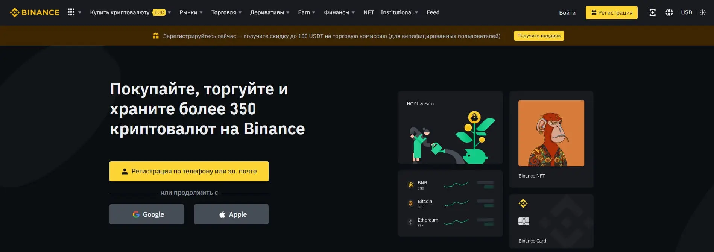
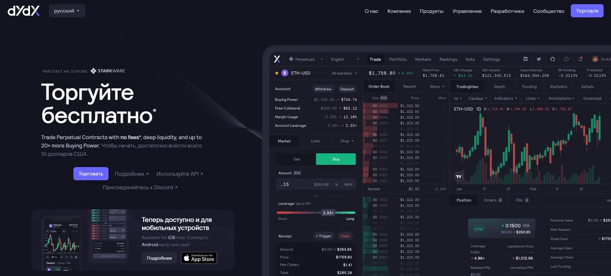
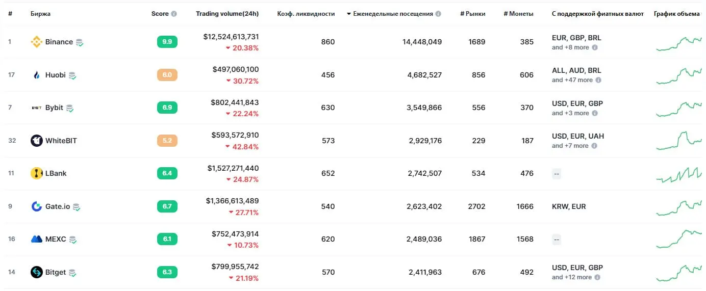

Топ бирж криптовалют для россиян


По данным мониторингового портала CoinMarketCap, в 2026 году в мире работает свыше 550 криптовалютных бирж, включая китайские и международные площадки, но пользователям из России доступна лишь часть из них. Появление новых бирж криптовалют в 2026 году – закономерность: рынок активно развивается, а биржи расширяют функционал, добавляя NFT, продукты DeFi и другие способы заработка на цифровых активах.
У начинающих трейдеров возникает много вопросов: как начать торговлю, как выбрать надежную площадку в России и не нарваться на SCAM-проект, где лучше торговать – на централизованной (CEX) или децентрализованной (DEX) бирже криптовалют. На нашем сайте можно ознакомиться с рейтингом криптовалютных бирж для новичков и списком проверенных площадок, изучить экспертные обзоры торговых платформ и сравнение их условий. В рейтинг лучших криптобирж для россиян мы включаем площадки, которые работают в России, и сравниваем их по комиссиям, безопасности, рублевому P2P, требованиям к верификации и отзывам трейдеров.
Биржа криптовалют – сайт, на котором можно покупать и продавать цифровые активы и зарабатывать на разнице курса. Помимо спотового рынка, лицензионные криптобиржи предлагают маржинальную и фьючерсную торговлю, внебиржевые (OTC) операции, P2P-обмен и пассивный доход: стейкинг, фарминг, майнинг ликвидности, арбитраж.
Чем отличаются сайты криптобирж в рейтинге?
Рыночной капитализацией, ликвидностью (объемом торгов), посещаемостью, листингом криптовалют, функционалом – в том числе операциями с фиатными деньгами (рубли, доллары), пополнением и выводом, – а также лимитами и комиссиями на ввод/вывод средств и торговыми сборами для тейкеров и мейкеров. Для лучших криптобирж для россиян важна и доступность из России. Сегодня на крипторынке работают два вида площадок – CEX- и DEX-биржи. К первым относятся Binance, Coinbase, Kraken, KuCoin, Bitstamp, Bitfinex, Bybit и другие крупнейшие централизованные биржи мира.

Чтобы получить полный доступ к функционалу CEX-криптобирж, нужно зарегистрироваться и пройти верификацию (KYC/AML). После этого трейдеру доступны:
- пополнение и вывод средств в криптовалюте и фиатных деньгах без жестких лимитов;
- все рынки биржи – спот, маржинальная торговля, деривативы (фьючерсы, опционы) и токенизированные активы (акции, золото, нефть);
- внебиржевая (OTC) площадка для крупных и корпоративных клиентов;
- P2P-сервис для прямого обмена криптовалют между пользователями, обычно без комиссии биржи;
- пассивный заработок – стейкинг, кредитование, майнинг ликвидности, арбитраж.
Альтернатива для тех, кто ищет торговлю без KYC, – децентрализованные площадки DeFi-сегмента: Uniswap, PancakeSwap, dYdX, DODO, Curve Finance и другие. DEX-платформы – это криптобиржи без верификации: торговать можно сразу после подключения собственного криптокошелька. На них нет лимитов на ввод/вывод, доступ к активам есть только у владельца, а в листинге встречаются экзотические монеты – высокорискованные инструменты, на которых можно как быстро заработать, так и все потерять.

У CEX- и DEX-бирж есть и недостатки. Централизованные биржи требуют идентификацию личности, а из-за западных санкций россиянам закрыт доступ на многие CEX-биржи. DEX-сервисы никем не регулируются, торговать на них можно без санкций и верификации, но там ниже ликвидность даже по ТОП-криптовалютам, чаще бывает проскальзывание цен, а владельцы многих площадок неизвестны.
Крупнейшие криптобиржи по объему торгов
Объем торгов – сумма всех сделок на бирже за сутки. По нему чаще всего составляют рейтинги крупнейших криптобирж.
Плюсы крупных по объему бирж:
- высокая ликвидность – ордера исполняются быстро и почти без проскальзывания цены;
- узкие спреды между ценой покупки и продажи;
- большой выбор торговых пар и инструментов: спот, фьючерсы, P2P, стейкинг;
- больше ресурсов на защиту аккаунтов, резервы и службу поддержки.
Минусы:
- крупнейшие биржи строже соблюдают международные санкции и требования KYC, поэтому чаще ограничивают пользователей из России;
- большую часть объема дают фьючерсы, а часть оборота может быть искусственной, поэтому цифра не всегда отражает реальный спрос;
- большой объем не гарантирует надежность: биржа с высоким оборотом тоже может заморозить средства или уйти с рынка.
Как выбрать надежную биржу криптовалют?
При выборе биржи криптовалют важно оценивать не только количество монет и удобство терминала, но и безопасность площадки, прозрачность работы и условия обслуживания. Особенно это важно новичкам, которые выбирают, где купить первую криптовалюту. Надежная площадка должна:
- защищать аккаунт двухфакторной аутентификацией и подтверждением операций;
- предоставлять понятную информацию о комиссиях, пополнении счета и выводе криптовалюты;
- иметь высокую ликвидность и объем торгов по основным парам, чтобы сделки исполнялись без проскальзывания;
- поддерживать удобные способы пополнения и вывода средств в вашем регионе;
- предлагать функциональный терминал, обучающие материалы и демо-режим;
- публиковать официальные правила работы, условия верификации и ограничения;
- иметь работающую службу поддержки и дополнительные сервисы: стейкинг, бонусы, реферальную программу.
Среди известных площадок из рейтинга – Binance, биржа криптовалют Bybit и другие платформы из нашего списка. Binance больше не обслуживает пользователей из России, поэтому россиянам стоит выбирать среди других бирж из топа. Регистрируйтесь только через официальный сайт биржи и заранее проверьте комиссии, требования к верификации и способы вывода, а подробнее условия популярных бирж криптовалют описаны в экспертных обзорах.

Российским трейдерам стоит отдавать предпочтение лицензионным криптобиржам с высокой рыночной капитализацией, ликвидностью и посещаемостью официального сайта, а также сравнивать комиссии на ввод/вывод средств и торговые сборы.
Самые надежные криптобиржи в России
К числу лучших и надежных криптобирж, доступных пользователям из России, относятся Bybit, OKX и BingX. Это крупные по объему торгов централизованные и проверенные торговые платформы, которые работают для россиян, с большим выбором криптовалют, высокой ликвидностью, инструментами защиты аккаунта и дополнительными сервисами. Они подходят как для покупки цифровых активов, так и для активной торговли в 2026 году.
Bybit входит в топ лучших площадок мира по объему торгов и ориентирована как на начинающих, так и на опытных трейдеров. На платформе доступны покупка и продажа криптовалют, спотовая торговля, деривативы и P2P-раздел с выводом рублей. Для защиты аккаунта используются двухфакторная аутентификация, подтверждение операций и другие инструменты безопасности. Интерфейс и справочные материалы доступны на русском языке.
OKX сочетает классическую криптобиржу с набором дополнительных сервисов. Пользователям доступны спотовая торговля, деривативы, P2P-операции, стейкинг и Web3-инструменты. Платформа публикует отчеты Proof of Reserves и предоставляет пользователям возможность самостоятельно проверять данные о резервах биржи.
BingX представляет собой криптовалютную биржу с широким выбором цифровых активов и торговых пар. Площадка поддерживает спотовую и фьючерсную торговлю, P2P-сделки, копи-трейдинг и дополнительные инструменты для работы с криптовалютой. Биржа также официально публикует данные о резервах, позволяющие оценивать обеспечение пользовательских активов.
Криптовалютные биржи с выводом в рублях
Для операций с рублями подходят криптовалютные биржи Bybit и BingX. На этих площадках работает P2P-торговля, через которую пользователи продают криптовалюту за RUB и получают оплату выбранным способом. Такой формат позволяет обменивать USDT, BTC и другие доступные цифровые активы на российские рубли непосредственно внутри P2P-раздела биржи без санкций и посредников. Через P2P можно и пополнить криптобиржу рублями, и вывести деньги на карту: оплата проходит банковским переводом или через СБП, а комиссия биржи за P2P-сделки обычно не взимается.
Bybit поддерживает P2P-торговлю с российским рублем. В разделе продажи можно выбрать криптовалюту, сумму сделки на вывод и подходящий способ получения оплаты. Площадка показывает доступные предложения мерчантов, курс, лимиты ордера и поддерживаемые способы перевода рублей на российские карты.
OKX работает с пользователями из России, но операции с рублями на ней недоступны, поэтому для вывода в рублях эта биржа не подходит.
BingX позволяет выводить стоимость криптовалюты в рублях через P2P-раздел без санкций. Для этого цифровые активы переводятся на P2P-счет (фандинговый), после чего пользователь выбирает предложение покупателя и продает криптовалюту за RUB. На P2P-площадке предусмотрены разные способы оплаты, лимиты сделок и система эскроу для проведения безопасных операций между пользователями.
Популярные биржи для торговли криптовалютой
Список популярных бирж для торговли криптовалютой зависит от страны: часть крупных площадок ограничивает пользователей из России и Беларуси, а в Казахстане работают биржи с местной лицензией. Регистрируйтесь только на официальном сайте биржи.
Российские криптобиржи
Под российскими криптобиржами обычно понимают площадки, которые работают с пользователями из России, поддерживают русский язык и операции с рублями. Таких бирж становится меньше: Gate, Bitget, MEXC, KuCoin и HTX прекратили обслуживание россиян.
Криптобиржи, которые работают в России:
- Bybit – самый крупный P2P-рынок с рублями, где можно купить и продать USDT через российские банки.
- OKX – работает с пользователями из России, но только для торговли криптовалютой: операции с рублями недоступны.
- BingX – популярная площадка с русским интерфейсом и копитрейдингом.
Перед регистрацией проверяйте актуальный статус биржи и не храните все активы на одной площадке.
Белорусские криптобиржи
В Беларуси операции с фиатом законно проводятся через резидентов Парка высоких технологий (ПВТ). Они работают с белорусскими рублями и принимают карты Белкарт, Visa и Мир:
- Bynex – торговля за BYN и USD;
- Whitebird – обмен на белорусские и российские рубли, под санкциями ЕС;
- Free2ex – спот и маржинальная торговля;
- Dzengi (бывшая Currency.com) – демо-счет.
Из бирж нашего рейтинга белорусам доступны:
- Bybit – Беларуси нет в ее списке ограниченных стран.
- OKX – для торговли криптовалютой.
Криптобиржи в Казахстане
В Казахстане криптобиржи работают легально в рамках Международного финансового центра «Астана» (МФЦА). Полную лицензию регулятора AFSA имеют:
- Binance Kazakhstan
- Bybit Kazakhstan
- ATAIX Eurasia
Из нашего рейтинга это Binance и Bybit. Часть зарубежных бирж, в том числе HTX и BingX, в Казахстане заблокирована.
Способы торговли для новичков
Биржи криптовалют из ТОП-30 по капитализации и объему торгов – как CEX, так и DEX – обычно предлагают четыре основных направления торговли:
- Классические спотовые торги. Трейдер покупает или продает криптоактив по текущей цене, выставляя ордер в книге заявок. На централизованной бирже для этого нужно пройти регистрацию и верификацию. Новичкам лучше начинать со спота: здесь самые низкие комиссии и нет риска ликвидации.
- Маржинальный трейдинг. Торговля с кредитным плечом: например, с плечом 1:10, имея 1 BTC, можно открыть сделку на 10 BTC. За заемные средства биржа берет процент.
- Рынок деривативов. Торговля фьючерсами, опционами и свопами. Открывая длинную (Long) или короткую (Short) позицию, трейдер ставит на рост или падение цены.
- P2P-сервис. Площадка для прямого обмена криптовалют и фиата между пользователями без посредников.
Для пользователей из России P2P – основной способ быстро обменять криптовалюту на рубли и обратно.
Бонусы криптобирж за регистрацию
Биржи из нашего ТОПа дают новичкам бонусы за выполнение заданий: верификацию, первый депозит и первые сделки.
- Bybit – задания в разделе наград: купоны и торговые бонусы за первый депозит и первые сделки.
- OKX – «таинственные коробки» (Mystery Box) с криптовалютой для новых пользователей и приглашенных друзей.
- BingX – ваучеры на оплату комиссий и фьючерсную торговлю за пополнение счета и первые сделки.
Большинство бонусов нельзя сразу вывести: ими оплачивают комиссии или используют их в торговле.
Часто задаваемые вопросы
-
В чем смысл торговли криптовалютами?
-
Как работают криптобиржи простыми словами?
-
Что нужно, чтобы начать торговать криптовалютой?
-
Какие криптобиржи работают в России?
-
Как зарегистрироваться на бирже криптовалют?
-
Как выводить деньги с криптобиржи?
-
Можно ли торговать автоматически?
-
Что такое спотовая торговля?
-
Могу ли я торговать криптовалютами с мобильного устройства?
-
Могу ли я торговать криптовалютами анонимно?
-
В двух словах: какие стратегии торговли криптовалютами существуют?